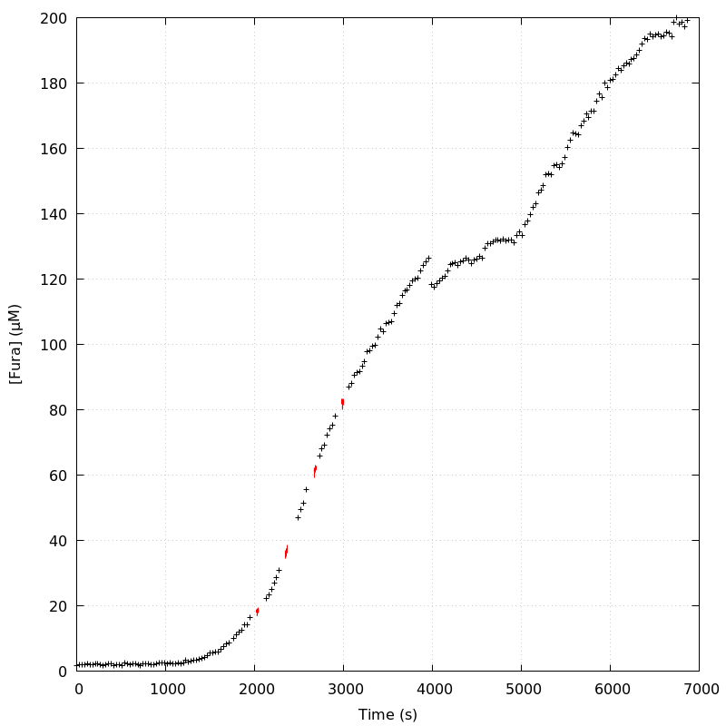
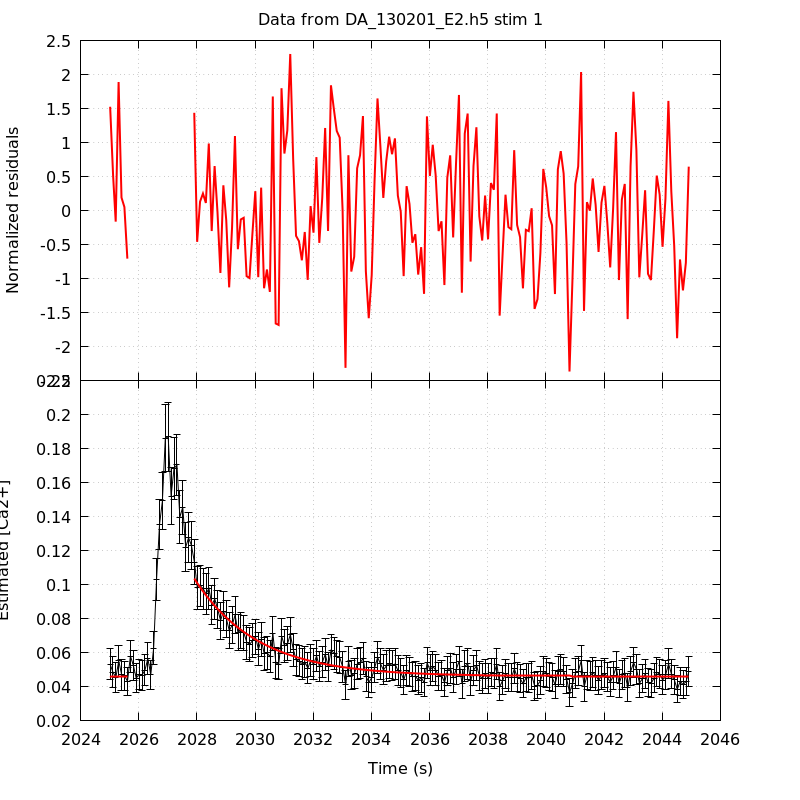
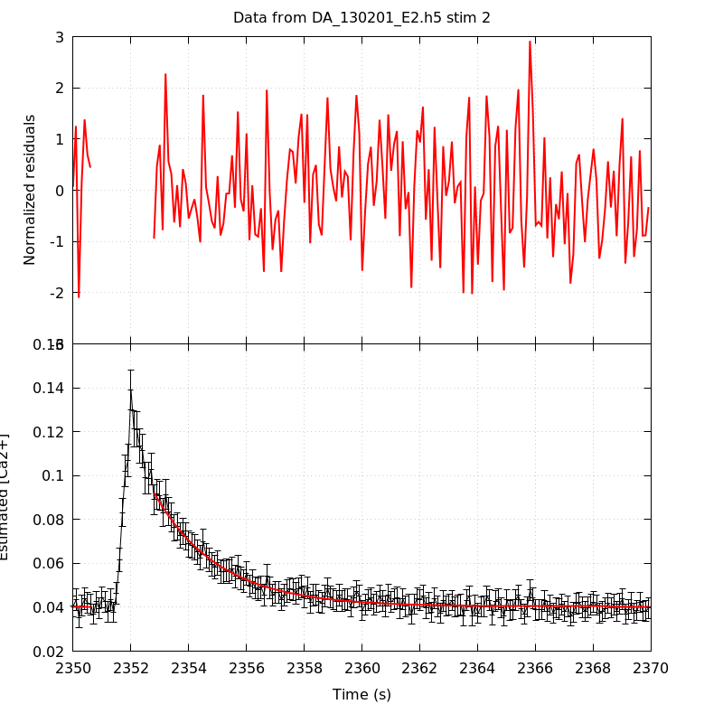
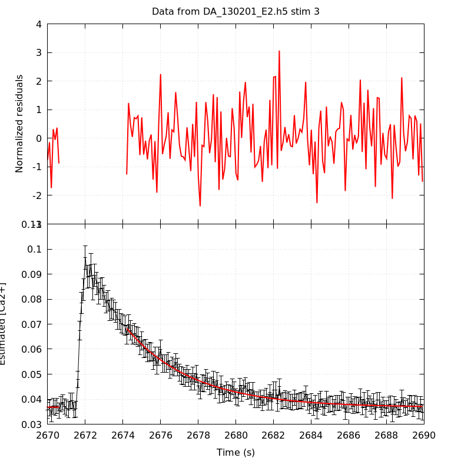
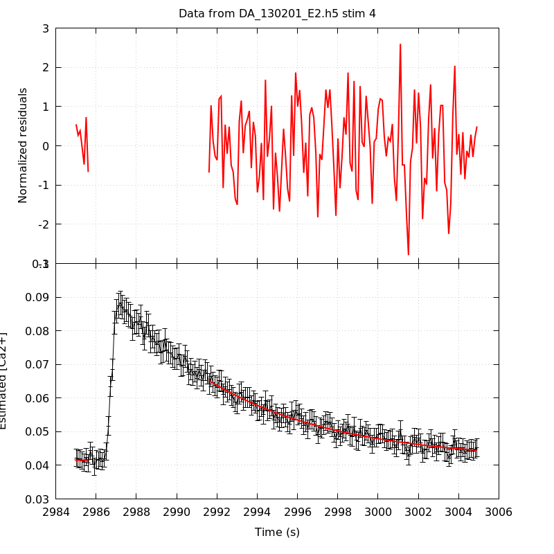
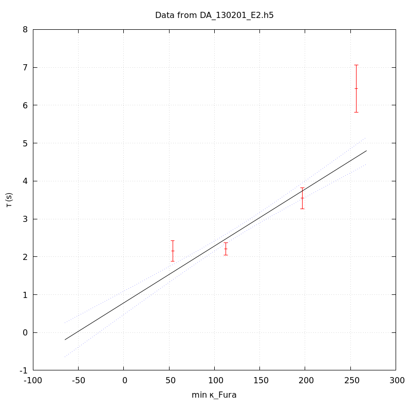
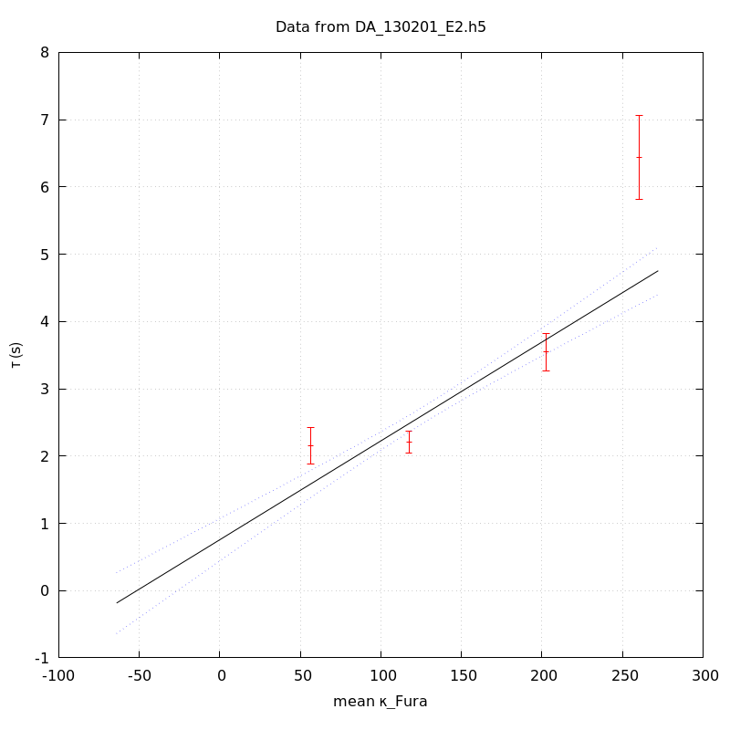

The baseline length is: 7.
When fitting tau against kappa_Fura only the transients for which the fit RSS and the lag 1 auto-correlation of the residuals were small enough, giving an overall probability of false negative of 0.02, were kept (see the numerical summary associated with each transient).
The good transients are: 1, 2, 3, 4.
The time at which the 'good' transients were recorded appear in red.

On each graph, the residuals appear on top. Under the null hypothesis, if the monoexponential fit is correct they should be centered on 0 and have a SD close to 1 (not exactly 1 since parameters were obtained through the fitting procedure form the data.
The estimated [Ca2+] appears on the second row. The estimate is show in black together with pointwise 95% confidence intervals. The fitted curve appears in red. The whole transient is not fitted, only a portion of it is: a portion of the baseline made of 7 points and the decay phase starting at the time where the Delta[Ca2+] has reached 50% of its peak value.
The time appearing on the abscissa is the time from the beginning of the experiment.
Transient 1 is 'good'.

nobs = 178
number of degrees of freedom = 175
baseline length = 7
fit started from point 29
estimated baseline 0.0460509 and standard error 0.000461572
estimated delta 0.0574638 and standard error 0.00245224
estimated tau 2.15515 and standard error 0.137694
residual sum of squares: 149.613
RSS per degree of freedom: 0.854929
Probability of observing a larger of equal RSS per DOF under the null hypothesis: 0.918148
Lag 1 residuals auto-correlation: 0.113
Pr[Lag 1 auto-corr. > 0.113] = 0.023
Transient 2 is 'good'.

nobs = 179
number of degrees of freedom = 176
baseline length = 7
fit started from point 28
estimated baseline 0.040331 and standard error 0.000252043
estimated delta 0.0519228 and standard error 0.00129469
estimated tau 2.20872 and standard error 0.0834809
residual sum of squares: 171.361
RSS per degree of freedom: 0.973641
Probability of observing a larger of equal RSS per DOF under the null hypothesis: 0.584671
Lag 1 residuals auto-correlation: -0.044
Pr[Lag 1 auto-corr. > -0.044] = 0.710
Transient 3 is 'good'.

nobs = 165
number of degrees of freedom = 162
baseline length = 7
fit started from point 42
estimated baseline 0.0367198 and standard error 0.000254786
estimated delta 0.0315362 and standard error 0.000611614
estimated tau 3.54538 and standard error 0.140892
residual sum of squares: 165.501
RSS per degree of freedom: 1.02161
Probability of observing a larger of equal RSS per DOF under the null hypothesis: 0.409009
Lag 1 residuals auto-correlation: -0.143
Pr[Lag 1 auto-corr. > -0.143] = 0.952
Transient 4 is 'good'.

nobs = 141
number of degrees of freedom = 138
baseline length = 7
fit started from point 66
estimated baseline 0.0414663 and standard error 0.000428811
estimated delta 0.0237312 and standard error 0.000487081
estimated tau 6.44018 and standard error 0.318427
residual sum of squares: 136.085
RSS per degree of freedom: 0.986125
Probability of observing a larger of equal RSS per DOF under the null hypothesis: 0.530133
Lag 1 residuals auto-correlation: 0.161
Pr[Lag 1 auto-corr. > 0.161] = 0.016
Since the [Fura] changes during a transient (and it can change a lot during the early transients), the unique value to use as '[Fura]' is not obvious. We therefore perform 3 fits: one using the minimal value, one using the mean and one using the maximal value.
The observed tau (shown in red) are displayed with a 95% confidence interval that results from the fitting procedure and is therefore meaningful only if the fit is correct!
No serious attempt at quantifying the precision of [Fura] and therefore kappa_Fura has been made since the choice of which [Fura] to use has a larger effect and since the other dominating effect is often the certainty we can have that the saturating value (the [Fura] in the pipette) has been reached.
The straight line in black is the result of a weighted linear regression. The blue dotted lines correspond to the limits of pointwise 95% confidence intervals.

Best fit: tau = 0.783142 + 0.0150057 kappa_Fura
Covariance matrix:
[ +2.48134e-02, -1.70579e-04
-1.70579e-04, +1.39125e-06 ]
Total sum of squares (TSS) = 222.734
chisq (Residual sum of squares, RSS) = 60.886
Probability of observing a larger of equal RSS per DOF under the null hypothesis: 6.00852e-14
R squared (1-RSS/TSS) = 0.726643
Estimated gamma/v with standard error: 66.6413 +/- 5.23828
Estimates kappa_S with standard error (using error propagation): 51.1896 +/- 11.2706
kappa_S confidence intervals based on parametric bootstrap
0.95 CI for kappa_S: [26.511,84.3102]
0.99 CI for kappa_S: [19.2192,97.4403]

Best fit: tau = 0.756647 + 0.0146877 kappa_Fura
Covariance matrix:
[ +2.57524e-02, -1.71983e-04
-1.71983e-04, +1.35348e-06 ]
Total sum of squares (TSS) = 222.734
chisq (Residual sum of squares, RSS) = 63.3475
Probability of observing a larger of equal RSS per DOF under the null hypothesis: 1.75493e-14
R squared (1-RSS/TSS) = 0.715592
Estimated gamma/v with standard error: 68.0843 +/- 5.39288
Estimates kappa_S with standard error (using error propagation): 50.5158 +/- 11.663
kappa_S confidence intervals based on parametric bootstrap
0.95 CI for kappa_S: [25.1471,84.8569]
0.99 CI for kappa_S: [19.046,99.6415]
Best fit: tau = 0.704735 + 0.01449 kappa_Fura
Covariance matrix:
[ +2.75436e-02, -1.78608e-04
-1.78608e-04, +1.34918e-06 ]
Total sum of squares (TSS) = 222.734
chisq (Residual sum of squares, RSS) = 67.1129
Probability of observing a larger of equal RSS per DOF under the null hypothesis: 2.67063e-15
R squared (1-RSS/TSS) = 0.698686
Estimated gamma/v with standard error: 69.0129 +/- 5.53217
Estimates kappa_S with standard error (using error propagation): 47.6358 +/- 12.0989
kappa_S confidence intervals based on parametric bootstrap
0.95 CI for kappa_S: [21.5994,81.3085]
0.99 CI for kappa_S: [14.4895,95.0123]
4 out of 4 transients were kept.
sigma(tau): 0.137694, 0.0834809, 0.140892, 0.318427
Residual correlation at lag 1: 0.11296482602320768, -0.04371325476646513, -0.14273672939910786, 0.1610020933193901
Probablity of a correlation at lag 1 smaller or equal than observed: 0.02300000000000002, 0.71, 0.952, 0.016000000000000014
RSS/DOF: 0.854929, 0.973641, 1.02161, 0.986125